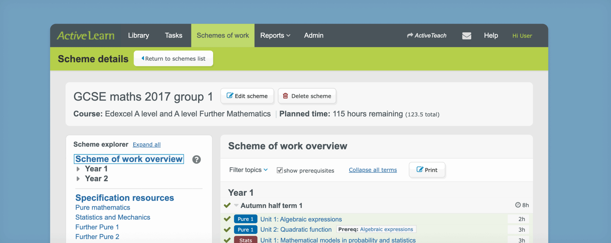
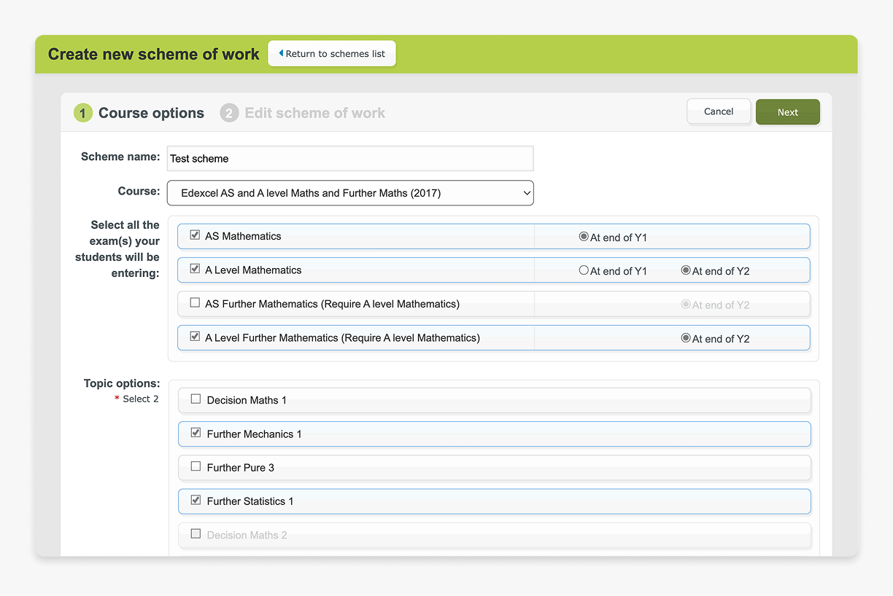
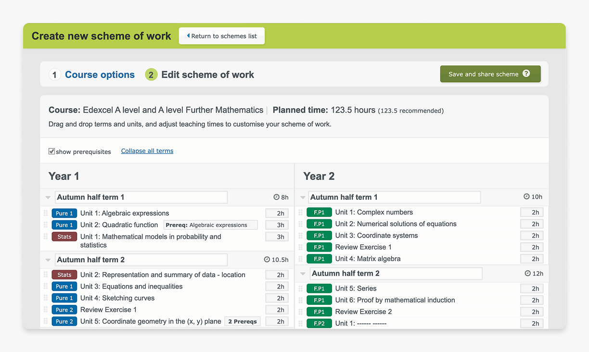
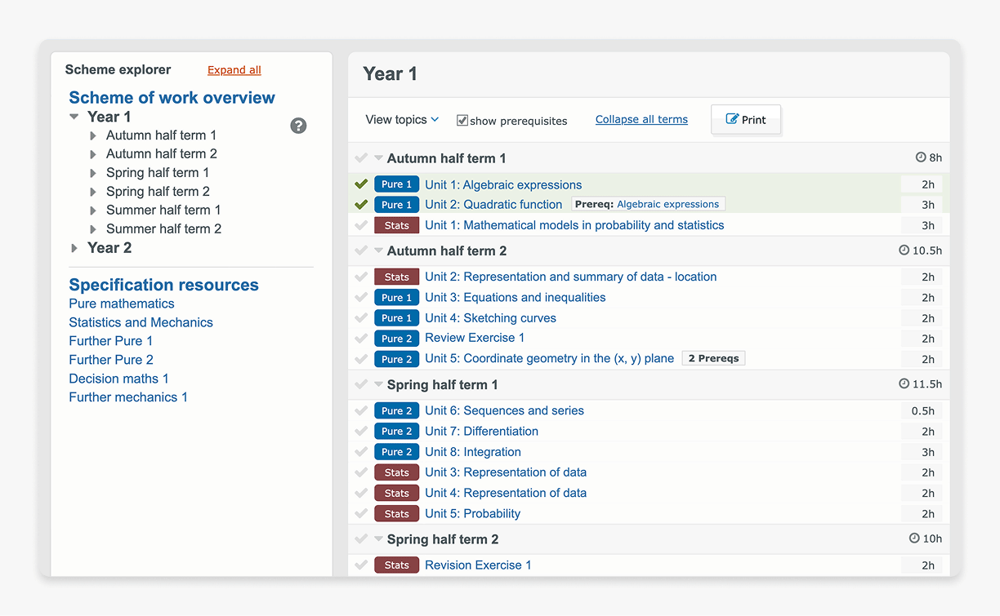
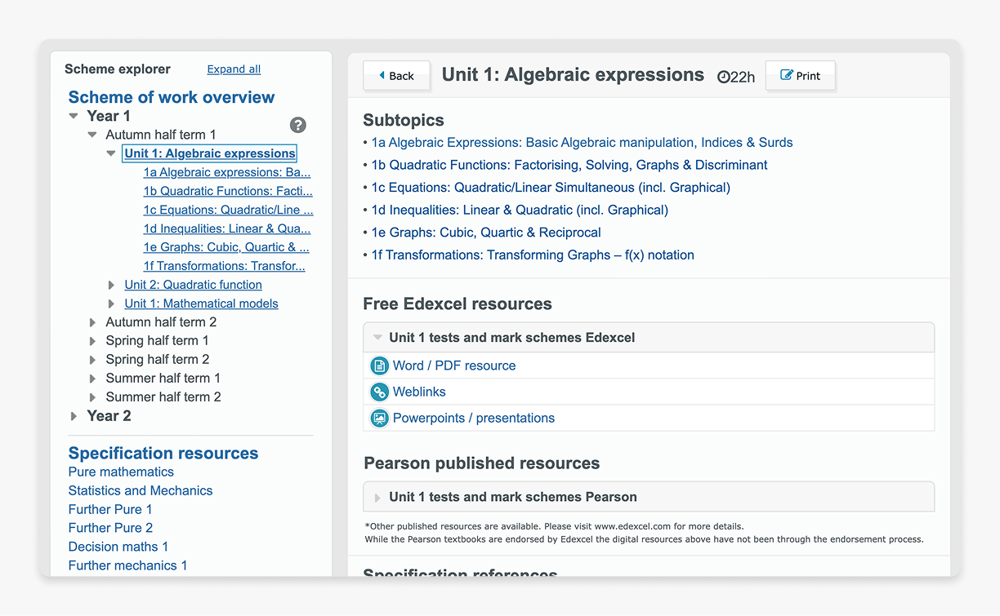
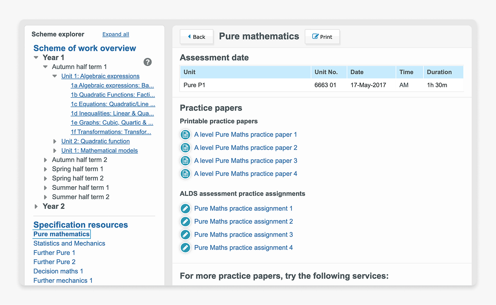

Schemes of Work are a long-term plans used by teachers to map out how to deliver courses can over an academic year. Traditionally created from scratch by teachers, or purchased as static documents as part of a course pack; ActiveLearn intended to help simplify that planning process and make it easier to customise for the need of individual classrooms.

Traditionally, creating a Scheme of work is a laborious process that requires teachers to thoroughly analyse the latest curriculum, matching them with available resources, and manually balance topics against available teaching hours. Or otherwise purchased as part of a resource pack as static documents that are difficult to customise.
The interactive scheme of work aims to simplify this process for teachers to create courses that are tailored to their specific classes.




